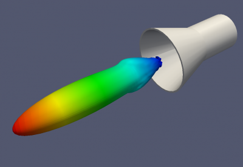

Tutorial: Conical Horn Antenna
From openEMS
- Download the latest matlab file using gitweb: Conical_Horn_Antenna.m
- Simulation Time: < 10 min
- Far-field calculations: ~ 1 hour
Contents |
This tutorial covers:
- setup conical horn antenna using a rotated polygon
- setup a rectangular feeding port
- adding a near-field to far-field (nf2ff) box
- calculate the S-Parameter of the antenna
- calculate and plot the far-field pattern
Matlab Simulation Script
- Start the script within an empty environment:
close all clear clc
- Setup the simulation parameters
physical_constants;
unit = 1e-3; % all length in mm
- Specify the conical horn model parameters
% horn radius horn.radius = 20; % horn length in z-direction horn.length = 50; horn.feed_length = 50; horn.thickness = 2; % horn opening angle horn.angle = 20*pi/180;
Note that horn.radius is actually the radius of the circular waveguide which feeds the horn.
The parameter horn.feed_length is the length of the circular waveguide.
The thickness of the metal which forms the horn is set by horn.thickness.
- Specify the simulation parameters
% size of the simulation box SimBox = [100 100 100]*2; % frequency range of interest f_start = 10e9; f_stop = 20e9; % frequency of interest f0 = 15e9; %% setup FDTD parameter & excitation function FDTD = InitFDTD( 'NrTS', 30000, 'EndCriteria', 1e-4 ); FDTD = SetGaussExcite(FDTD,0.5*(f_start+f_stop),0.5*(f_stop-f_start)); BC = {'PML_8' 'PML_8' 'PML_8' 'PML_8' 'PML_8' 'PML_8'}; % boundary conditions FDTD = SetBoundaryCond( FDTD, BC );
- Define the mesh
%% setup CSXCAD geometry & mesh % currently, openEMS cannot automatically generate a mesh max_res = c0 / (f_stop) / unit / 15; % cell size: lambda/20 CSX = InitCSX(); %create fixed lines for the simulation box, substrate and port mesh.x = [-SimBox(1)/2 -horn.radius 0 horn.radius SimBox(1)/2]; mesh.x = SmoothMeshLines( mesh.x, max_res, 1.4); % create a smooth mesh between specified fixed mesh lines mesh.y = mesh.x; %create fixed lines for the simulation box and given number of lines inside the substrate mesh.z = [-horn.feed_length 0 SimBox(3) ]; mesh.z = SmoothMeshLines( mesh.z, max_res, 1.4 ); CSX = DefineRectGrid( CSX, unit, mesh );
Note that the mesh in the z-direction does not cover the range set by SimBox: the mesh starts at -horn.feed_length and goes to +200.
Even though the horn is rotationally symmetric, a rectangular grid is still used.
Image of the model mesh in the x-z plane.
- Specify the geometry of the horn and the waveguide feed
%% create horn % horn + waveguide, defined by a rotational polygon CSX = AddMetal(CSX, 'Conical_Horn'); p(1,1) = horn.radius+horn.thickness; % x-coord point 1 p(2,1) = -horn.feed_length; % z-coord point 1 p(1,end+1) = horn.radius+horn.thickness; % x-coord point 1 p(2,end) = 0; % z-coord point 1 p(1,end+1) = horn.radius+horn.thickness + sin(horn.angle)*horn.length; % x-coord point 2 p(2,end) = horn.length; % y-coord point 2 p(1,end+1) = horn.radius + sin(horn.angle)*horn.length; % x-coord point 2 p(2,end) = horn.length; % y-coord point 2 p(1,end+1) = horn.radius; % x-coord point 1 p(2,end) = 0; % z-coord point 1 p(1,end+1) = horn.radius; % x-coord point 1 p(2,end) = -horn.feed_length; % z-coord point 1 CSX = AddRotPoly(CSX,'Conical_Horn',10,'x',p,'z'); % horn aperture A = pi*((horn.radius + sin(horn.angle)*horn.length)*unit)^2;
Polygon which is rotated about the z-axis to generate the conical horn model.
- Define the excitation
%% apply the excitation %%%%%%%%%%%%%%%%%%%%%%%%%%%%%%%%%%%%%%%%%%%%%%%%%%% start=[-horn.radius -horn.radius mesh.z(10) ]; stop =[+horn.radius +horn.radius mesh.z(1)+horn.feed_length/2 ]; [CSX, port] = AddCircWaveGuidePort( CSX, 0, 1, start, stop, horn.radius*unit, 'TE11', 0, 1);
The circular waveguide port runs from z = -41.176 to -25.
- Set up field storage and run simulation
CSX = AddDump(CSX,'Exc_dump'); start=[-horn.radius -horn.radius mesh.z(8)]; stop =[+horn.radius +horn.radius mesh.z(8)]; CSX = AddBox(CSX,'Exc_dump',0,start,stop); %% nf2ff calc start = [mesh.x(9) mesh.y(9) mesh.z(9)]; stop = [mesh.x(end-8) mesh.y(end-8) mesh.z(end-8)]; [CSX nf2ff] = CreateNF2FFBox(CSX, 'nf2ff', start, stop, 'Directions', [1 1 1 1 0 1]); %% prepare simulation folder Sim_Path = 'tmp'; Sim_CSX = 'horn_ant.xml'; [status, message, messageid] = rmdir( Sim_Path, 's' ); % clear previous directory [status, message, messageid] = mkdir( Sim_Path ); % create empty simulation folder %% write openEMS compatible xml-file WriteOpenEMS( [Sim_Path '/' Sim_CSX], FDTD, CSX ); %% show the structure CSXGeomPlot( [Sim_Path '/' Sim_CSX] ); %% run openEMS RunOpenEMS( Sim_Path, Sim_CSX);
Note in the CreateNF2FFBox command that the -z direction has been disabled because the model touches the -z boundary of the simulation space.
Model of the conical horn. The corners of the planes which define the waveguide port can be seen protruding from the circular waveguide.
Gridded model of the conical horn.
- Postprocessing
%% postprocessing & do the plots freq = linspace(f_start,f_stop,201); port = calcPort(port, Sim_Path, freq); Zin = port.uf.tot ./ port.if.tot; s11 = port.uf.ref ./ port.uf.inc; % plot reflection coefficient S11 figure plot( freq/1e9, 20*log10(abs(s11)), 'k-', 'Linewidth', 2 ); ylim([-60 0]); grid on title( 'reflection coefficient S_{11}' ); xlabel( 'frequency f / GHz' ); ylabel( 'reflection coefficient |S_{11}|' ); drawnow %% NFFF contour plots %%%%%%%%%%%%%%%%%%%%%%%%%%%%%%%%%%%%%%%%%%%%%%%%%%%% % calculate the far field at phi=0 degrees and at phi=90 degrees thetaRange = (0:2:359) - 180; disp( 'calculating far field at phi=[0 90] deg...' ); nf2ff = CalcNF2FF(nf2ff, Sim_Path, f0, thetaRange*pi/180, [0 90]*pi/180); Dlog=10*log10(nf2ff.Dmax); G_a = 4*pi*A/(c0/f0)^2; e_a = nf2ff.Dmax/G_a; % display some antenna parameter disp( ['radiated power: Prad = ' num2str(nf2ff.Prad) ' Watt']); disp( ['directivity: Dmax = ' num2str(Dlog) ' dBi'] ); disp( ['aperture efficiency: e_a = ' num2str(e_a*100) '%'] ); %% % normalized directivity figure plotFFdB(nf2ff,'xaxis','theta','param',[1 2]); drawnow % D_log = 20*log10(nf2ff.E_norm{1}/max(max(nf2ff.E_norm{1}))); % D_log = D_log + 10*log10(nf2ff.Dmax); % plot( nf2ff.theta, D_log(:,1) ,'k-', nf2ff.theta, D_log(:,2) ,'r-' ); % polar plot figure polarFF(nf2ff,'xaxis','theta','param',[1 2],'logscale',[-40 20], 'xtics', 12); drawnow % polar( nf2ff.theta, nf2ff.E_norm{1}(:,1) ) %% calculate 3D pattern phiRange = sort( unique( [-180:5:-100 -100:2.5:-50 -50:1:50 50:2.5:100 100:5:180] ) ); thetaRange = sort( unique([ 0:1:50 50:2.:100 100:5:180 ])); disp( 'calculating 3D far field...' ); nf2ff = CalcNF2FF(nf2ff, Sim_Path, f0, thetaRange*pi/180, phiRange*pi/180, 'Verbose',2,'Outfile','nf2ff_3D.h5'); figure plotFF3D(nf2ff); % plot liear 3D far field %% E_far_normalized = nf2ff.E_norm{1}/max(nf2ff.E_norm{1}(:)); DumpFF2VTK([Sim_Path '/Conical_Horn_Pattern.vtk'],E_far_normalized,thetaRange,phiRange,'scale',1e-3);
Results

|

|

{kind=link}
{kind=link}
{kind=link}
{kind=link}
{kind=link}